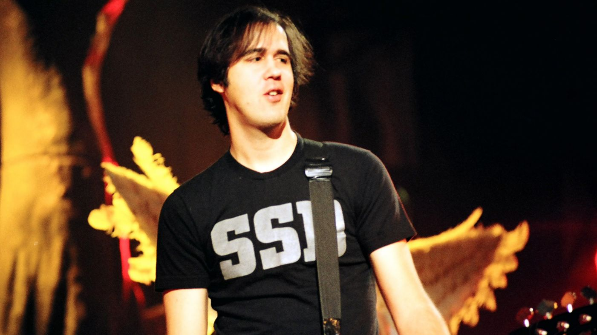
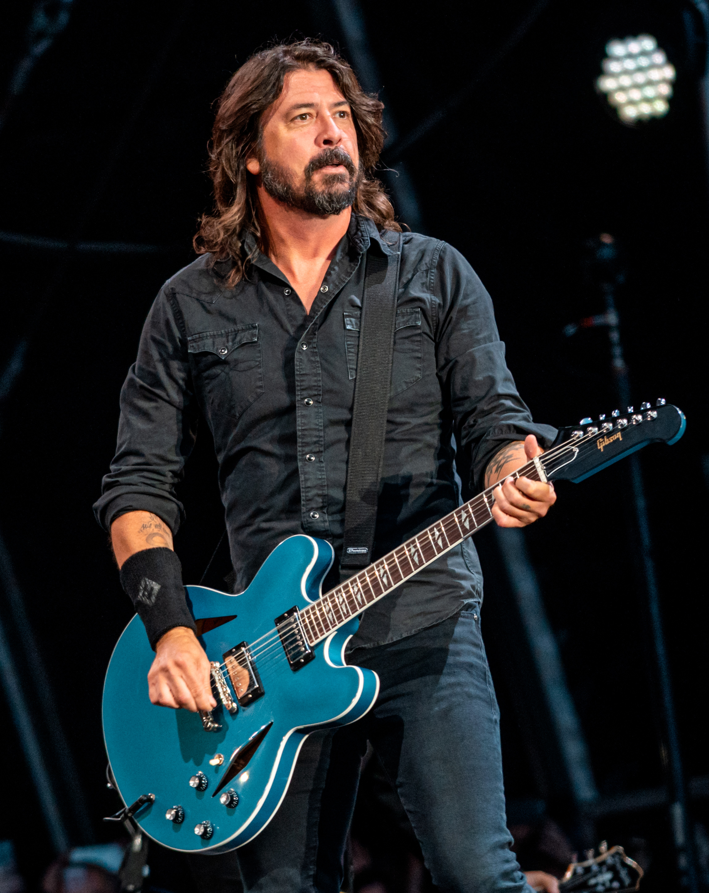

Участники группы

Курт Кобейн
Вокал, гитара (1987-1994)
Основатель, фронтмен и главный автор песен группы. Его уникальный голос и
глубокие тексты стали определяющими для целого поколения.

Крист Новоселич
Бас-гитара (1987-1994)
Один из основателей группы и близкий друг Курта Кобейна. Его басовые линии
стали важной частью фирменного звучания Nirvana.

Дэйв Грол
Ударные (1990-1994)
Присоединился к группе в 1990 году. Его мощная игра на ударных придала
звучанию группы новую энергию. Позже основал Foo Fighters.